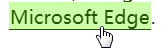

样式化链接
任务目标：学习如何将样式应用到链接状态，以及如何使用链接实现常见的 UI 功能，比如导航菜单。
由于层叠（为了防止样式失效），所以要使用LVFHA顺序来设置样式。助记：LoVe Fears HAte
:link 未访问的链接。未访问的的链接是蓝色的
:visited 已访问的链接。（存在于浏览器的历史记录）访问过的 (Visited) 链接是紫色的。表示链接被点击后。
:foucus 选中链接时，当用户单击或通过键盘的 “tab” 键选择时触发。主要用于文本框输入文字时使用（鼠标松开时显示颜色）
:hover 鼠标光标悬停在链接的上面时。
:active 激活链接时。当用鼠标交互时，它代表的是用户按下按键和松开按键之间的时间，即按住鼠标按钮时。
可以按 tab 键来选中页面的链接。
不同的浏览器默认的行为可能不同，所以链接设置 outline: none; 和 text-decoration: none; 取消轮廓与下划线。
下划线使用 border-bottom 创造, 而不是 text-decoration，因为前者比后者有更好的样式， 并且绘制的位置会稍微低一点，所以不会穿过字母(比如 字母 g 和 y 的底部)。
border-bottom 设置为1px solid, 没有明确的颜色，使边框采用和元素文本一样的颜色。这是很有用的，因为链接的每种状态下，文本是不同的颜色。
CSS：
a {
outline: none;
text-decoration: none;
padding: 2px 1px 0;/*背景颜色上面内边距空出2px，左右内边距空出1px，下面内边距为0*/
}
a:link {
color: #265301;
}
a:visited {
color: #437A16;
}
a:focus {
border-bottom: 1px solid;
background: #BAE498;
}
a:hover {
border-bottom: 1px solid;
background: #CDFEAA;
}
a:active {
background: #265301;
color: #CDFEAA;
}
HTML：
<p>There are several browsers available, such as <a href="https://www.mozilla.org/zh-CN/firefox/">Mozilla
Firefox</a>, <a href="https://www.google.com/chrome/index.html">Google Chrome</a>, and
<a href="https://www.microsoft.com/zh-CN/windows/microsoft-edge">Microsoft Edge</a>.</p>
效果图


在链接中包含图标
CSS：
a[href*="http"] {
background: url('https://mdn.mozillademos.org/files/12982/external-link-52.png') no-repeat 100% 0;/*100% 0使图片出现在右上方*/
background-size: 16px 16px;/*图片宽16px高16px,CSS3属性适用于IE9以上*/
padding-right: 19px;/*为背景图片留出空间*/
}
HTML：
<p>For more information on the weather, visit our <a href="weather.html">weather page</a>,
look at <a href="https://en.wikipedia.org/wiki/Weather">weather on Wikipedia</a>, or check
out <a href="http://www.extremescience.com/weather.htm">weather on Extreme Science</a>.</p>
<!--所有外部链接为绝对URL的都会添加图标-->
效果图：

样式化链接为选项卡（按钮）
选项卡：即一个网站导航菜单，通常是标记为一个列表，列表中包含链接，用于让用户可以访问站点的其他部分。
HTML：
<ul>
<li><a href="#">Home</a></li><li><a href="#">Pizza</a></li><li><a href="#">Music</a></li><li><a href="#">Wombats</a></li><li><a href="#">Finland</a></li>
</ul>
<!-- HTML 中的列表的每项内容都在同一行上，这是因为 inline-block 元素在页面上创建的空格换行符，就像几个字之间的空格，这样的空隙也许会破坏我们的水平导航菜单布局。所以我们删除了空格-->
CSS：
body,html {
margin: 0;
font-family: sans-serif;
}
ul {
padding: 0;/*当<ul>宽度是<body>的宽度时,padding: 0 在这里起到让元素左边和上边贴住页面的作用，不受浏览器默认样式影响，list-style-type即左边的点只是往左移到页面看不见的地方了而已*/
width: 100%;
}
li {
display: inline;
}
a {
outline: none;/*防止破坏外观*/
text-decoration: none;/*防止破坏外观*/
display: inline-block;/*<a>是行内元素，但是我们不希望它们像值为 block 时一样，溢出自己的行跳到下一行,又想调整它们的大小，所以设置inline-block*/
width: 19.5%;/*设置每个选项卡的宽度*/
margin-right: 0.625%;/*设置选项卡与选项卡之间的距离 */
text-align: center;/*文本水平居中*/
line-height: 3;/*文本垂直居中，同时让选项卡有一些高度*/
color: black;/*文本颜色从蓝色变为黑色*/
}
li:last-child a {
margin-right: 0;/*所有宽度加起来是 100.625%,会让最后一个按钮溢出 <ul>,这条声明让<ul>恢复到了100%*/
}
a:link, a:visited, a:focus {
background: yellow;
}
a:hover {
background: orange;
}
a:active {
background: red;
color: white;
}
效果图：